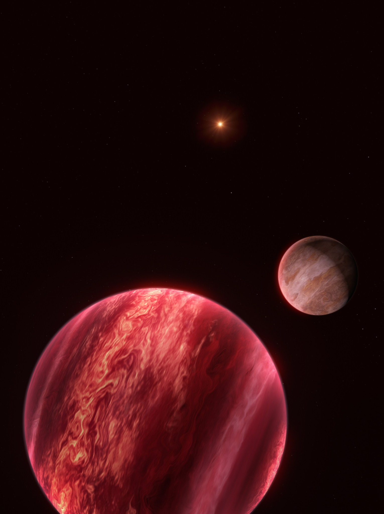

Un equipo internacional liderado por investigadores del Núcleo Milenio YEMS publicó en Nature evidencia sólida de un satélite de masa planetaria orbitando CD-35 2722 B, una joven enana marrón que a su vez acompaña a una estrella. El resultado abre una nueva vía para buscar sistemas de lunas más allá del Sistema Solar y plantea una pregunta fundamental: ¿cuándo un satélite debe ser llamado exoluna?
Hasta ahora se han descubierto más de 6000 exoplanetas, pero ningún satélite alrededor de un mundo extrasolar había sido confirmado de manera convincente. Existen candidatos propuestos mediante otras técnicas, aunque continúan siendo debatidos. El nuevo trabajo presenta una señal periódica compatible con al menos un objeto orbitando directamente una enana marrón observada por imagen directa.
Representación artística del sistema CD-35 2722. El candidato a satélite orbita una enana marrón, que a su vez gira alrededor de una estrella. Crédito: ESO/M. Kornmesser.
Una técnica conocida aplicada a un nuevo tipo de sistema
El equipo utilizó el método de velocidad radial , la misma estrategia que permitió descubrir el primer exoplaneta alrededor de una estrella similar al Sol. Un objeto en órbita ejerce una pequeña atracción gravitatoria sobre su anfitrión y produce un movimiento periódico que puede medirse en su espectro. En este caso, en lugar de medir una estrella, los investigadores analizaron directamente la luz de la enana marrón CD-35 2722 B.
Las observaciones se realizaron con CRIRES+ , el espectrógrafo infrarrojo de alta resolución instalado en el Very Large Telescope (VLT) de ESO, en el Observatorio Paranal, Chile. El programa monitoreó el objeto entre octubre de 2023 y febrero de 2026. Tras descartar observaciones de baja calidad, el análisis se basó en 23 épocas de alta precisión.
CD-35 2722 B tiene una masa cercana a 37 veces la de Júpiter y se encuentra lo suficientemente separada de su estrella como para que CRIRES+ pueda estudiar su espectro sin contaminación importante de la estrella principal. Esa geometría fue crucial para alcanzar una precisión muy superior a intentos anteriores de buscar satélites mediante velocidades radiales en planetas o enanas marrones observados directamente.
Una señal de aproximadamente 170 días
Las mediciones muestran una variación periódica muy significativa. El modelo favorecido incluye un satélite candidato con una masa mínima de alrededor de 0,7 masas de Júpiter y un período orbital cercano a 170 días . Debido a que no se conoce la inclinación de la órbita, su masa real podría ser mayor, aunque es poco probable que el objeto sea otra enana marrón.
Los datos también pueden describirse mediante un segundo escenario con dos satélites: uno exterior con un período similar a 170 días y otro interior cercano a 87 días, aproximadamente en una resonancia orbital 2:1. Sin embargo, simulaciones dinámicas con el código REBOUND muestran que la mayoría de las configuraciones de dos satélites serían inestables, salvo geometrías muy específicas. Por ello, el equipo considera más probable el modelo de un solo satélite en una órbita moderadamente excéntrica.

El sistema tendría tres niveles jerárquicos: una estrella, una enana marrón compañera y un satélite de masa planetaria. Crédito: ESO/M. Kornmesser.
¿Satélite, planeta o exoluna?
La clasificación del objeto no es sencilla. El candidato orbita una enana marrón, no un planeta, y su masa es mucho mayor que la de las lunas del Sistema Solar. Al mismo tiempo, ocupa el último nivel de un sistema jerárquico de tres componentes y su masa es pequeña en comparación con la de su anfitrión, características que recuerdan a una luna.
Actualmente no existe una definición internacionalmente aceptada de exoluna . Por esa razón, el estudio utiliza el término neutral satélite . El descubrimiento muestra que las categorías creadas para describir nuestro Sistema Solar podrían resultar insuficientes para la diversidad de arquitecturas que existen alrededor de otras estrellas.
Una nueva ventana para estudiar la formación de mundos
Los satélites contienen información sobre la formación y la evolución dinámica de sus sistemas. Una futura población de objetos similares permitirá evaluar modelos de formación alrededor de planetas y enanas marrones, estudiar resonancias y migración orbital, y explorar sistemas jerárquicos que hasta ahora solo podían investigarse de manera teórica.
Aunque el candidato de CD-35 2722 B es demasiado masivo para parecerse a una luna habitable, la detección de satélites extrasolares también es relevante para la búsqueda de vida. En otros sistemas, el calentamiento por mareas podría mantener lunas activas y potencialmente habitables incluso fuera de la zona habitable clásica de su estrella.
Las próximas observaciones serán decisivas. Un seguimiento más prolongado permitirá confirmar la persistencia de la señal, precisar la órbita y distinguir con mayor claridad entre el escenario de uno o dos satélites. Si se confirma, este sería el primer sistema observado en el que un satélite orbita un objeto subestelar que, a su vez, orbita una estrella.
Investigación liderada desde Chile
El trabajo fue liderado por Kevin Hoy , estudiante de doctorado de la Universidad Diego Portales e integrante de YEMS, junto a Alice Zurlo , directora del Núcleo Milenio YEMS. El equipo incluye a Pablo A. Peña R., Jana Köhler, Silvano Desidera, Raffaele Gratton, Cecilia Lazzoni, Simon Petrus, Florian Rodler, Jonathan Smoker, Valentina D’Orazi, Ilaria Carleo e Ilaria Giovannini.
La colaboración reúne investigadores de la Universidad Diego Portales, ESO, YEMS, CATA, TLS Tautenburg, NASA Goddard, INAF Padova, INAF Roma, la Universidad de Roma Tor Vergata y la Universidad de Padova. El estudio combina observaciones obtenidas desde Chile, análisis espectroscópico de alta precisión, modelamiento orbital y simulaciones dinámicas.
Para YEMS, este resultado aborda una de las preguntas centrales que dieron origen al centro: avanzar desde el estudio de exoplanetas jóvenes hacia la detección y caracterización de sus sistemas de satélites.
Contactos
Comunicaciones YEMS
Núcleo Milenio YEMS
comunicacionesyems@gmail.com
Kevin Hoy
Instituto de Estudios Astrofísicos, Universidad Diego Portales; Observatorio Europeo Austral (ESO); Núcleo Milenio YEMS
kevin.hoy@mail.udp.cl
Alice Zurlo
Instituto de Estudios Astrofísicos, Universidad Diego Portales; Directora del Núcleo Milenio YEMS
alice.zurlo@mail.udp.cl
Fuente: Comunicado de prensa ESO eso2610 .